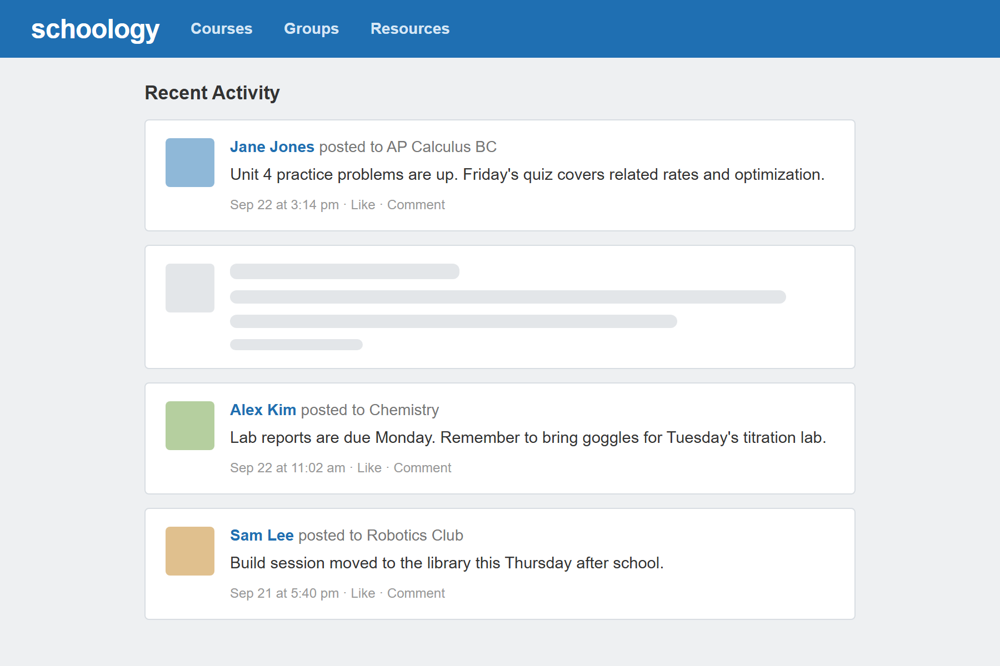

A Chrome extension that hides posts from chosen people in the Schoology Recent Activity feed. You list their names in a text file, one per line. A background service worker reads the list and passes it to a content script that runs on every Schoology page, which removes any post whose author is on it, ignoring capitalization and extra spaces.
The first version was a popup with a Remove button that ran a one-time cleanup against a hard-coded list of names. The current version runs on its own: it clicks "More" once to load older posts, and a MutationObserver removes matching posts as new ones appear. With the names moved into a file, anyone can load the extension and use their own list, and schools on a custom Schoology domain can add it to the manifest.
